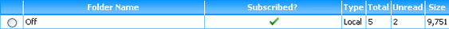
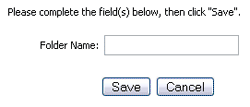
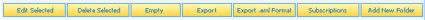
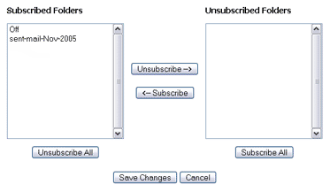

From the Folder Manager, you may navigate and manage your account folders, including making new folders and deleting old folders. Common Folder
Managers tasks include:
Navigating the Folder Manager
The layout of the Folder Manager is similar to that of the Inbox, as all folders that exist on the account are represented by a separate row
in a folder list. Each row includes a radio button, the folder name, the subscription status, the folder type, the
total number of messages in the folders, the number of unread messages, and the size of the folder.

Navigate to a specific folder by clicking a linked folder name. You may perform actions on any existing folder by marking the radio button on
the appropriate row and using the folder option buttons located both above and below the folder list.
Adding a New Folder
EMU Webmail users are free to add as many folders to their account as they wish. Create a folder by first clicking on the "Add New Folder" button
which launches the Folder Editor in a popup window.

Specify if the folder is local or not. Local folders are saved in your EMU Webmail account, while non-local folders exist on the server from which
you are fetching your email. Note, unless the email account you are accessing is an IMAP account, your folder must be set "local". Finally, enter
a name for your new folder and click the "Save" button. The popup window will close and the Folder Manager should refresh and include your new folder.
Once a folder has been created you may edit it at any time by marking the appropriate folder's radio button and clicking the "Edit Selected" button.
Deleting Folders
Entire folders may be deleted by the marking the appropriate folder's radio button and clicking the "Delete Selected" button from the folder
options that appear both above and below the folder list. It is important to note that once a folder is deleted, it and its content has been
permanently lost.

Subscribing to Folders
Folder "Subscriptions" offer an easy method of limiting some of the visibility of folders around the EMU Webmail interface. We offer this because many
users choose to create and actively use dozens of folders. While doing so doesn't impact the performance of EMU Webmail, it can make it a little more
difficult to use in some locations where the folders are listed.
Folders that are not marked as "Subscribed" will not appear in the main menu's folder tree, as well as any of the other
folder-selection areas of the interface (except for the Folder Manager), such as the "Save Select In:" message option in the Inbox and Folders.

Folders may be subscribed or unsubscribed as often as needed via the Subscription Editor popup window which appears after clicking the
"Subscriptions" button from the folder options located both above and below the folder list.
Inside the editor use the options to move each folder back and forth between the Subscribed and Unsubscribed lists as needed. When you are satisfied
with each list, click the "Save" button and you will be returned to the Folder Manager page.
Exporting Folders
At some time you might wish to export specific folder for the purpose of backing it up, moving it to a different account, etc. To export a folder,
first mark the appropriate radio button for the folder. Clicking the "Export" button from the folder options will bring up a dialogue box which prompts
you to select a location and name for the exported file. The folder is saved in text format with extension .mbox. Note, you cannot export empty folders.